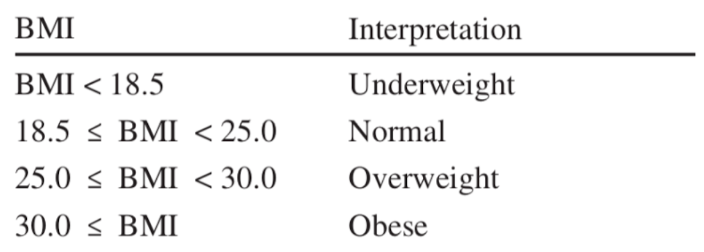

Program Tính chỉ số BMI và xếp loại tương ứng
Chỉ số BMI của bạn là:
Chỉ số BMI đối với người trên 20 tuổi được phân loại và diễn giải theo bảng sau:

Ví dụ: Một người có cân nặng là 65Kg và chiều cao là 1.75m thì BMI là 65 / 1.752 = 22.22. Chỉ số này nằm trong khoảng 18.5 đến 25.0 cho nên được phân loại là Normal (bình thường).